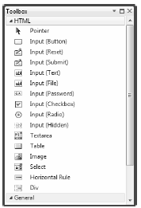
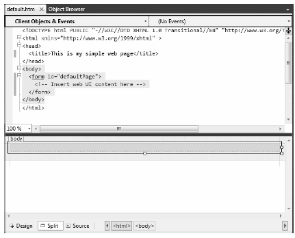
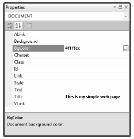
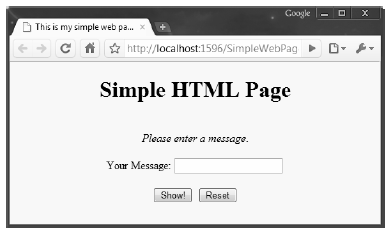

Once you have configured a directory to host your web application and you have chosen a web server to serve as the host, you need to create the content itself. Recall that a web application is simply a set of files that constitute the functionality of the site. To be sure, many of these files will contain Hypertext Markup Language (HTML) statements. HTML is a standard markup language used to describe how literal text, images, external links, and various HTML controls are to be rendered within the client-side browser.
While it is true that modern IDEs (including Visual Studio 2010) and web development platforms (such as ASP.NET) generate much of the HTML automatically, you will do well to have a working knowledge of HTML as you work with ASP.NET.
Note Recall from Chapter 2 that Microsoft has released a number of free IDEs under the Express family of products (such as Visual C# Express). If you are interested in web development, you may wish to also download Visual Web Developer Express. This free IDE is geared exclusively towards the construction of ASP.NET web applications.
While this section will most certainly not cover all aspects of HTML, it will touch on some basics. This will help you better understand the markup generated on your behalf by the ASP.NET programming model.
An HTML file consists of a set of tags that describe the look and feel of a given web page. The basic structure of an HTML document tends to remain the same. For example, *.htm files (or, equivalently, *.html files) open and close with <html> and </html> tags, typically define a <body> section, and so forth. Keep in mind that traditional HTML is not case sensitive. Therefore, in the eyes of the hosting browser, <HTML>, <html>, and <HtmL> are identical.
To illustrate some HTML basics, open Visual Studio 2010 and create empty HTML Page file via the File > New > File menu selection (notice that you are not making a web project at this point, you are just opening a blank HTML file for editing). Once you have done so, save it as default.htm in a convenient location. You should see the following initial markup:
<!DOCTYPE html PUBLIC "-//W3C//DTD XHTML 1.0 Transitional//EN" "http://www.w3.org/TR/xhtml1/DTD/xhtml1-transitional.dtd"> <html xmlns="http://www.w3.org/1999/xhtml" > <head> <title>Untitled Page</title> </head> <body> </body> </html>
First of all, notice that this HTML file opens with a DOCTYPE processing instruction. This informs the IDE that the contained HTML tags should be validated against the XHTML standard. As mentioned, traditional HTML was very loose in its syntax. Beyond the case insensitivity issue, it was permissible to define an opening element (such as <br> for a line break) that did not have a corresponding closing break (</br> in this case). The XHTML standard is a W3C specification that adds some much-needed rigor to the basic HTML markup language.
Note By default, Visual Studio 2010 validates all HTML documents against the XHTML 1.0 Transitional validation scheme to ensure the markup is in sync with the XHTML standard. If you wish to specify an alternative validation scheme (such as HTML 4.01), activate the Tools > Options dialog box, expand the Text Editor node, expand the HTML node, and then select the Validation node. On a related note, if you would rather not see validation warnings, simply uncheck the Show Errors check box found in the same location.
The <html> and </html> tags are used to mark the beginning and end of your document. Notice that the opening <html> tag is further qualified with an xmlns (XML namespace) attribute that qualifies the various tags that may appear within this document (again, by default these tags are based on the XHTML standard). Web browsers use these particular tags to understand where to begin applying the rendering formats specified in the body of the document. The <body> scope is where the vast majority of the actual content is defined. To spruce things up just a bit, update the title of your page as so:
<head> <title>This is my simple web page</title> </head>
Not surprisingly, the <title> tags are used to specify the text string that should be placed in the title bar of the calling web browser.
The real meat of most *.htm files occurs within the scope of the <form> elements. An HTML form is simply a named group of related UI elements typically used to gather user input. Do not confuse an HTML form with the entire display area shown by a given browser. In reality, an HTML form is more of a logical grouping of widgets placed in the <form> and </form> tag set:
<html xmlns="http://www.w3.org/1999/xhtml" > <head> <title>This is my simple web page</title> </head> <body> <form id="defaultPage"> <!-- Insert web UI content here --> </form> </body> </html>
This form has been assigned the ID of "defaultPage". Typically, the opening <form> tag supplies an action attribute that specifies the URL to which to submit the form data, as well as the method of transmitting that data itself (POST or GET). For the time being, let’s look at the sorts of items that can be placed in an HTML form (beyond simple literal text).
Visual Studio 2010 provides an HTML tab on the Toolbox that allows you to select an HTML control that you wish to place on your HTML designer (see Figure 32-3).
Figure 32-3 The HTML tab of the Toolbox
Note When you are building ASP.NET web pages, you will not be using these HTML controls to create the user interface! Rather, you will use the ASP.NET web controls, which will render back the correct HTML on your behalf.
Similar to the process of building a Windows Forms or WPF application, these HTML controls can be dragged onto the HTML designer surface. If you click on the Split button on the bottom of the HTML editor, the bottom pane of the HTML editor will display the HTML visual layout and the upper pane will show the related markup. Another benefit of this editor is that as you select markup or an HTML UI element, the corresponding representation is highlighted (Figure 32-4).
Figure 32-4 The Visual Studio 2010 HTML designer
Visual Studio 2010 also allows you to edit the overall look and feel of the *.htm file or a given HTML control in the <form> using the Properties window. For example, if you select DOCUMENT from the drop-down list of the Properties window, you are able to configure various aspects of the HTML page, such as the background color, background image (if any), title, and so forth (Figure 32-5).
Figure 32-5 The Visual Studio Properties window can be used to configure the HTML markup
As you use the Properties window to configure an aspect of your web page, the IDE will update the HTML accordingly. Here is a minor change to your page that now sets the background color of the overall document:
<html xmlns="http://www.w3.org/1999/xhtml" > <head> <title>This is my simple web page</title> </head> <body bgcolor="#ffffcc"> <form id="defaultPage"> <!-- Insert web UI content here --> </form> </body> </html>
Update the <body> of the default.htm file to display some literal text that prompts the user to enter a message (be aware that you can enter and format literal textual content by typing directly in the HTML designer). Here you are using the <h1> tag to set a header weight, <p> for a paragraph block and <i> for italic text:
<html xmlns="http://www.w3.org/1999/xhtml" > <head> <title>This is my simple web page</title> </head> <body bgcolor="ffffcc"> <!-- Prompt for user input--> <h1 align="center">Simple HTML Page</h1> <p align="center"> <br/> <i>Please enter a message</i>. </p> <form id="defaultPage"> </form> </body> </html>
Now let’s build the HTML form itself. In general, each HTML control is described using an id attribute (used to identify the item programmatically) and a type attribute (used to specify which UI element you are interested in placing in the <form> declaration). Depending on which UI widget you have declared, you will find additional attributes specific to the control that can be modified using the Properties window.
The UI you will build here will contain one text field and two button types. The first button will be used to run a client side script and the other to reset the form input fields to the default values. Update your HTML form as so:
<!-- Build a form to get user info --> <form id="defaultPage"> <p align="center"> Your Message: <input id="txtUserMessage" type="text"/></p> <p align="center"> <input id="btnShow" type="button" value="Show!"/> <input id="btnReset" type="reset" value="Reset"/> </p> </form>
Notice that you have assigned relevant IDs to each control (txtUserMessage, btnShow, and btnReset) and that each input item has an extra attribute named type that marks these input controls as UI items that automatically clear all fields to their initial values (type="reset"), receive text input (type="text"), or function as a simple client side button which does not post back to the web server (type="button").
Save your file, then right click on the designer and select the View in Browser menu option. Figure 32-6 shows the current page with Google Chrome.
Figure 32-6 Your simple default.htm page
Note When you select the View in Browser option, Visual Studio 2010 will automatically launch the ASP.NET Development web server to host your content.